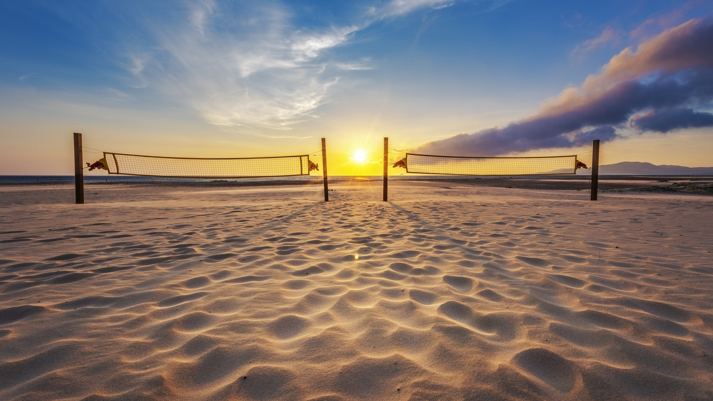
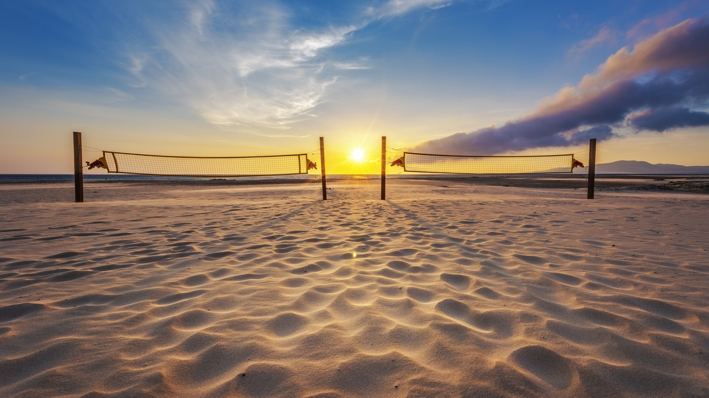
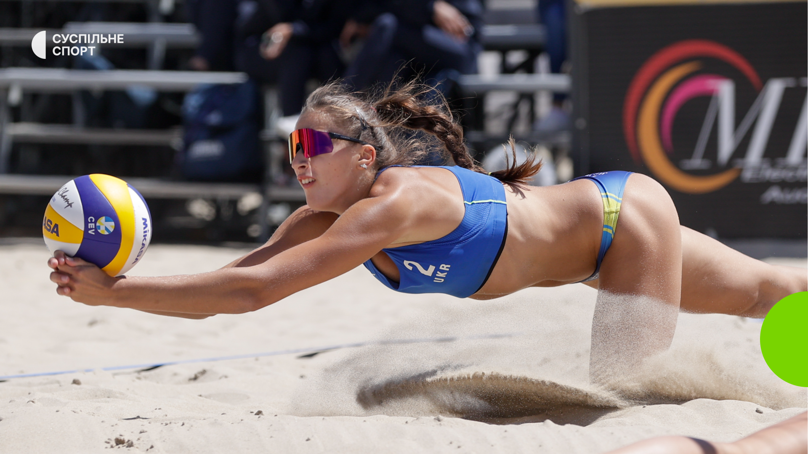
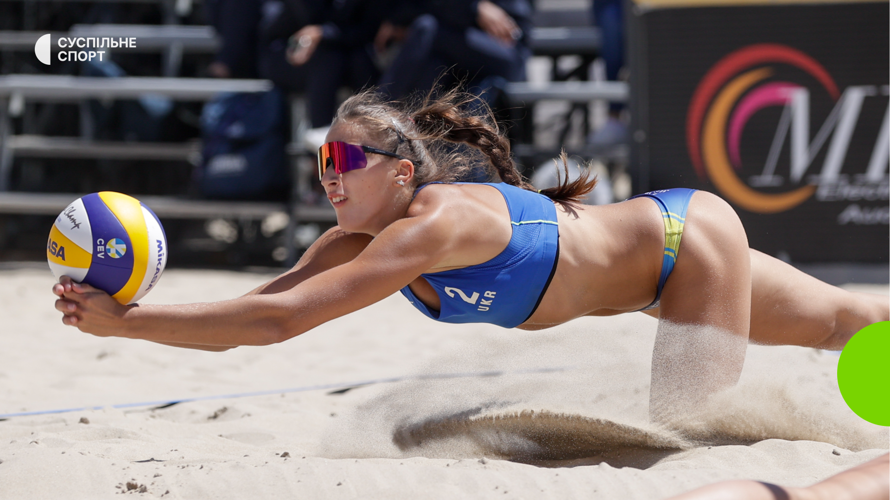
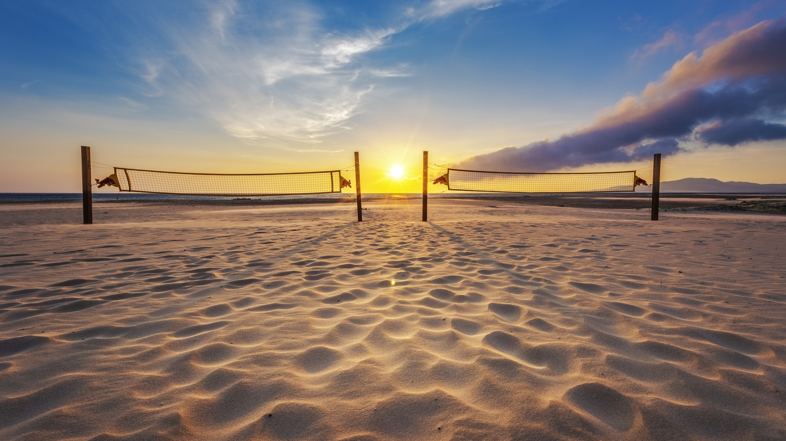
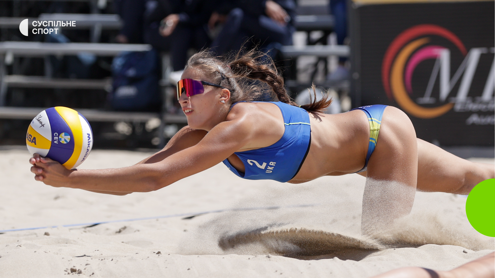

 


⬆


Пляжний волейбол — популярний вид спорту, гра на розділеному високою сіткою піщаному майданчику, в якому дві команди, що перебувають по різні боки сітки перекидають через неї м'яч, як правило, руками з метою приземлити його на чужій половині і не допустити падіння м'яча на своїй половині майданчика. Пляжний волейбол розвинувся як самостійний вид спорту з класичного волейболу. Між двома видами спорту існує багато спільного, але є й істотні відмінності в правилах і техніці гри.
Пляжний волейбол, окрім традиційних для волейболістів стрибучості, хорошої реакції, сили, відчуття м'яча, вимагає особливої атлетичності (у грі на піску спортсменам доводиться частіше здійснювати стрибки і ривки) і витривалості (матчі, в яких заміни гравців у командах правилами не передбачені, часто проходять в умовах високої температури, при яскравому сонці або при дощі і сильному вітрі, до того ж звичайною практикою є проведення однією командою декількох ігор на день). Важливою якістю для гравців є універсальність, адже команда в пляжному волейболі складається всього з двох гравців. Гравці не розділені за амплуа і розміщуються на майданчику вільно. Проте зараз у багатьох командах можна виділити високого блокувальника і нижчого, але рухливішого захисника (догравача), звільненого від роботи на блоці.
Головним керівним органом у пляжному волейболі є Міжнародна рада з пляжного волейболу, що входить до складу FIVB, — Міжнародної федерації волейболу.
Волейбол пляжний є олімпійським видом спорту. Від 1996 року пляжний волейбол присутній у програмі змагань Олімпійських ігор.
Найбільшими змаганнями, окрім олімпійських турнірів, є чемпіонати світу, що проводяться один раз на два роки; Світовий тур — щорічне комерційне змагання, що складається з декількох етапів, організоване аналогічно тенісним ATP- і WTA-турам; турніри, що проводяться регіональними конфедераціями, що входять до FIVB.